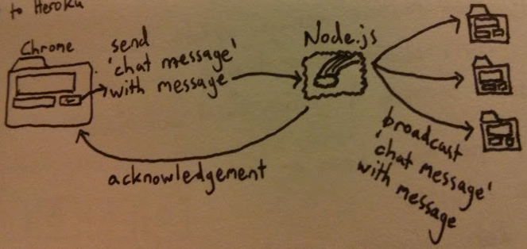

The number of people viewing this page is X.
Chat:
We may as well let people chat while we're at it.

On the server (app.js), listen for a message named chat message with the data being a string containing the message. When you receive it:
Broadcast the message to every other user, also with the name chat message.
Send an acknowledgement. (You don't need to send any data with the acknowledgement.)
Check the notes at the bottom of this page for a reminder of how to send and receive messages and acknowledgements.
Look in browser-side JavaScript file main.js for the comment // YOUR MESSAGE-SENDING CODE GOES HERE. Finish the implementation of the sendChatMessage(message, callback) function:
Send the chat message to the server in a message named chat message.
Call the function callback when you receive server acknowledgement.
main.js will also need to listen for chat message messages sent by the server. Call addChatMessage(message) with the messages you receive.
Now you can open http://localhost:3000/tutorial-10.html in a few tabs and chat it up!
Open public/tutorial-11.html in Brackets. It should automatically open in this Chrome tab as well. If not, click the lightning bolt again.
The way to send a message to the server from the browser (and vice-versa) is by calling the emit function on a socket:
socket.emit('message without data');
socket.emit('message with data', { some_key: 'some value' });
socket.emit('message with confirmation', function (responseData) {
});
You can also use socket.broadcast.emit(), which will send the message to every socket except that one.
The way to receive a message is by calling the on function on a socket:
socket.on('message without data', function () {
});
socket.on('message with data', function (data) {
});
socket.on('message with acknowledgement', function (data, callback) {
callback('response data');
});